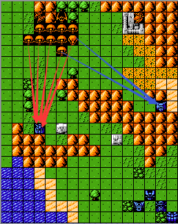
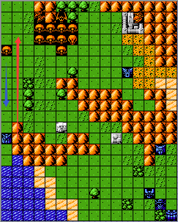
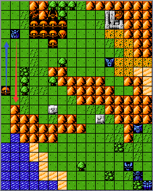
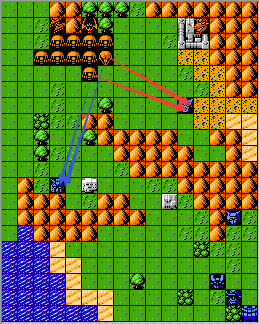

风筝玩法只需要关注三个参数和一个原则性问题和一个随机性问题，即地形机动补正、机体类型、机体机动力和敌方单位在没有移动之后可攻击目标的移动原则和敌方走位的随机性原则。地形机动补正、机体类型、机体机动力相关请参考游戏说明-游戏简介-参数说明-显参中的相关内容。
对于风筝的使用一般是用我方高机动的空型单位去牵制大部分敌方单位，然后由我方其他单位去歼灭剩余的敌方单位，再将牵制的敌方单位分散，逐个击破。
1.一对多的风筝方法：一对多的风筝原则就是利用敌方单位在移动范围内无攻击目标的原则来牵制其行动，如下图所示：

敌方单位在移动范围内无攻击目标时的移动原则为会朝着距离我方最近的单位移动（考虑地形机动补正的影响，实际计算的最短路径为计算地形机动补正之后的结果，例如陆型单位穿越5格的山脉，那么实际路径是10），按照此原则，如图所示的敌方单位均会向高达移动，而不会向距离更远的爱美神A移动，这就起到了一对多的风筝目的。
2.一对一的风筝方法：一般用于对个别较强单位的牵制，而且是占据极部分的战场，以免对大战场造成干扰，如下图所示：
 
如左图所示高达在风筝扎古时，扎古朝蓝色箭头移动，那么我们可以选择往上，当然这取决于两者的机动差值，如果差值过小，那么必须往下或者往右走。在下一回合，扎古必然会往上行动，那么我们选择往下移动，如此往复，在局部区域对其进行风筝；如图二所示在扎古第二次行动时，扎古可能会朝着蓝色箭头所示方向移动，那么我们可以选择将高达移动到红色箭头所示位置，尽量保证扎古在下次移动时距离高达的位置是相距1格，这样可以保证在后期有更大的移动空间。
3.对于敌方部队的分散方法：与上述方法一致，均为利用敌方单位在移动范围内无攻击目标的原则，如下图所示：

按照以上原则，箭头所示兹萨和扎古距离高达的路径更远（扎古为8，兹萨为10），距离盖塔1的距离更近（均为7），因此这两个敌方单位在移动时会朝着盖塔1移动，其他单位移动原则同理，这就起到了分散敌方部队的方法。
4.对于上述问题所涉及到的敌方随机走位问题：敌方单位在移动范围内无攻击目标，朝距离我方最近单位移动时，如果有多条最短路径，那么会随机选择这些最短路径中的一条来进行移动，那么我们需要关注这个随机性，通过适当的SL来达到我们预期的结果，如下图所示：
对于第二条中一对一风筝的情况，扎古在朝高达移动时有两条最短路径可选，即红色箭头所示的两个位置，如若扎古选择右边的路径进行移动，那么必然会对后续的风筝造成不利的影响（高达往下移动进行风筝会被阻挡），此时我们可以通过“SL”来使扎古沿着左边的路径进行移动，从而使得高达在下回合移动时具有更有利的选择。